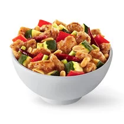
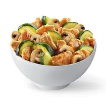
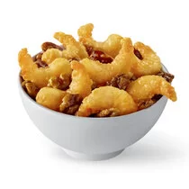
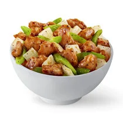

| ORANGE CHICKEN Crujiente pollo sazonado con salsa agridulce y picante. |
BROCCOLI BEEF Trozos de carne de res cocinados al wok con brócoli, salsa soya y jengibre.  |
| KUNG PAO CHICKENPollo marinado, cocinado al wok con maní pimientos rojos, calabacín y chile de árbol  |
CANTONESE PORK Carne de cerdo marinada y cocinada al wok con brócoli, cebolla, champiñones, chile pimiento rojo y frijoles negros. Sazonada con salsa de ajo y jengibre.  |
| MUSHROOM CHICKENPollo, setas y calabacín salteados al wok con salsa de soya y jengibre.  |
GRILLED TERIYAKI CHICKENPollo a la parilla con salsa teriiyaki  |
| HONEY WALNUT SHRIMP Camarones tempura al wok con una salsa de miel y nueces glaseadas  |
MONGOLIAN BEEFCarne de res marinada cocinada . al Wok con champiñones, chile pimiento. rojo, cebollín y cebolla sazonada con salsa de ajo.  |
| BROCCOLI CHICKENPollo, broccoli y cebolla, . salteados al wok.  |
BLACK PEPPER CHICKEN Pollo a la pimienta, salteado. al wok con cebolla y aprio fresco.  |